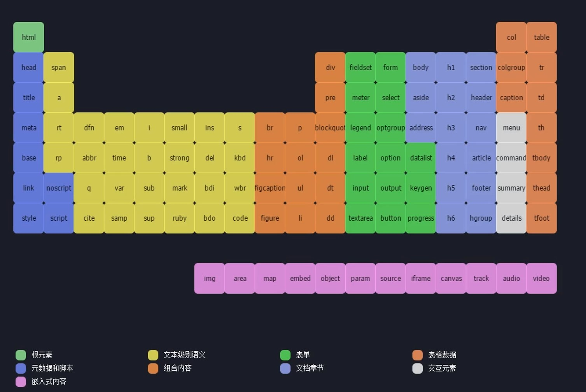

列表
a
b
c
a
b
c
a
b
c
a
b
c
表单元素form
Input
Input single line text
add a input box with the background text can delete
Input many lines text
aaaaaaaaa
add a input box with the background text can't edit
the box size edit and box's width add
add a input box with the background text can't edit and input text length limit
add a input box with the background text can't edit
Password can't show
Click Button
确认2
three diff buttons use
Function: Button>input button> input submit
Slip mode
Range:add a slip mode,value is position of start
Number:add a click mode
Checkbox(复选框):Please choice one
是
否
add a click choice
多个选项和只能选其一
1
2
3
下拉式选项卡
下拉框选项卡1:不可以再次编辑，只能选择给出选项
what is your choice?
bread
coffe
milk
下拉框选项卡2:可以再次编辑添加选项
bread
coffe
milk
import picture
import file
import date
若要使对象变换位置，需要先将其处理的对象放在一个块中,在这个块中可以直接变化，也可c使用ss变化
image直接上传picture

import video